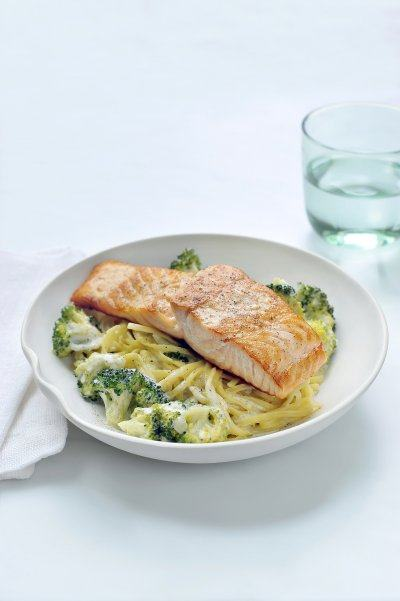

Zalm met pasta en broccoli

Ingrediënten
- 400g verse zalm
- 400 gram pasta
- 1 sjalot
- 1 broccoli
- 300 ml
- peper en zout
- olijfolie
Bereiding
- Breng gezouten water aan de kook in een grote pot.
- Snijd de broccoli in roosjes en snipper de sjalot fijn.
- Kook de broccoliroosjes beetgaar in het kokende water. Schep de roosjes er met een schuimspaan uit en kook
vervolgens de pasta in hetzelfde water beetgaar.
- Fruit de sjalot aan in een klein scheutje olijfolie. Doe de broccoliroosjes erbij en overgiet met de room.
Kruid met peper en zout en laat enkele minuutjes pruttelen op een laag vuurtje.
- Verhit een scheutje olijfolie in een anti-kleefpan en bak hierin de zalmfilets aan beide zijden mooi aan. De
zalm mag nog een beetje roze zijn vanbinnen.
- Giet de pasta af en voeg deze bij de broccoli en de room. Meng goed door elkaar.